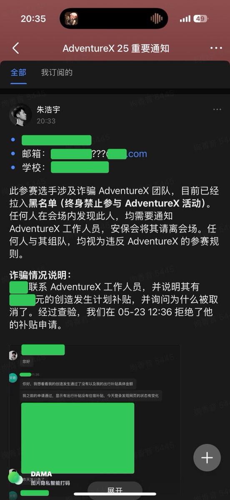

ʟᴜᴍɪ¹ 🇲🇾
@lumigj02
本来就是个给小孩子玩玩 过家家的活动
真没觉得这个有什么水平…

绚香音 Rizumu
@OikawaRizumu
我不知道发生了什么，但是我看到 @adventurex_plan 的主办方正在以自我判断去在 1000 多人面前以一个完全站不住脚的理由指责别人违法？
并且吧受害人的学校信息公开？
我觉得这是一个明确的网络暴力，而且是 AdventureX 官方名义在进行的。
没有法律判决，他们可以发布这样的信息吗？ https://t.co/zST4jowAlI